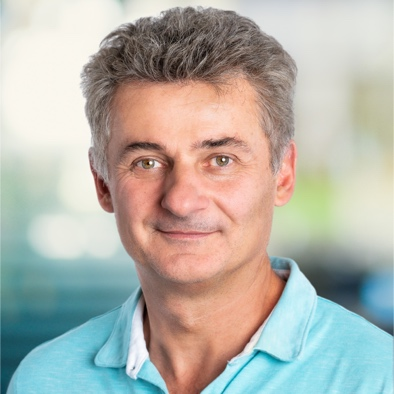

CIDR 2021 Keynote Speakers:
Tuesday Keynote: 9:00 am
-10:00 am

Benoit Dageville, Snowflake Co-Founder & President of
Products
Title:
Snowflake Data Cloud
Abstract:
The Snowflake Data Cloud is a new type of cloud dedicated to data analytics, built on top
of the infrastructure provided by the three major cloud providers, namely Amazon, Microsoft
and Google. In this talk, we will give an overview of the Snowflake cloud data platform,
highlighting how we leverage cloud to make Snowflake infinitely scalable, elastic, global,
collaborative and finally extremely simple to use. In particular, we will show that this
is made possible by our multi-cluster shared-data architecture. This novel architecture,
specifically designed for cloud, allows unlimited and independent scaling of both compute
and storage, with instant elasticity along both dimensions. The Snowflake cloud data platform
is globally distributed making it one single multi-tenant platform for the world. This enables
collaboration between tenants, for example allowing one tenant, here a provider, to share a
secure view of a database with one or more tenants, referred to as consumers. Our multi-cluster
shared-data architecture enables live data sharing without the need to share any compute
resources, resulting in full isolation between providers and consumers.
Bio:
Benoit co-founded Snowflake and currently serves as
President of the Product division. Benoit is a leading expert in parallel
execution and self-tuning database systems. Prior to founding Snowflake, Benoit
was with Oracle for over 10 years as a lead architect for parallel execution in
Oracle RAC and a key architect in the SQL Manageability group. Prior to Oracle,
Benoit worked at Bull Information Systems. He helped define the architecture
and lead database performance efforts for Bull’s parallel systems. Benoit has a
PhD in Computer Science with a focus in Parallel Database Systems and is a
named inventor on more than 80 patents.
Thursday Keynote: 9:00 am
-10:00 am
Kunle
Olukotun, Stanford University
Title: Let the Data Flow!
Abstract:
As the benefits from Moore’s Law diminish, future computing performance improvements
will rely on specialized application accelerators. To justify the expense of designing
an accelerator it should accelerate an important set of application areas. In this talk,
we explain how Reconfigurable Dataflow Accelerators (RDAs) can be used to accelerate a
broad set of data analytic applications. RDAs are a reconfigurable computing substrate
designed to accelerate Machine Learning (ML) by efficiently executing the hierarchical
dataflow that exists in many ML applications and models. Powered by RDAs, SambaNova’s
DataScale systems are achieving world-record performance on a number of challenging ML applications. RDAs can also accelerate database applications by using dataflow for stream record processing. Finally, stream record processing can be used to support a new threading model called Dataflow threads. Dataflow threads enable high-performance irregular control and data flow that is required for efficient computation on trees, graphs, and hash tables.
Bio:
Kunle Olukotun is the Cadence Design Professor
of Electrical Engineering and Computer Science at Stanford University. Olukotun
is well known as a pioneer in multicore processor design and the leader of the
Stanford Hydra chip multipocessor (CMP) research project. Olukotun founded
Afara Websystems to develop high-throughput, low-power multicore processors for
server systems. The Afara multicore processor, called Niagara, was acquired by
Sun Microsystems. Niagara derived processors now power all Oracle SPARC-based
servers. Olukotun currently directs the Stanford Pervasive Parallelism Lab
(PPL), which seeks to proliferate the use of heterogeneous parallelism in all
application areas using Domain Specific Languages (DSLs). Olukotun is a member
of the Data Analytics for What’s Next (DAWN) Lab which is developing
infrastructure for usable machine learning. Olukotun is a co-founder of
SambaNova Systems. Olukotun is an ACM Fellow and IEEE Fellow for contributions
to multiprocessors on a chip and multi-threaded processor design and is the
recipient of the 2018 IEEE Harry H. Goode Memorial Award. Olukotun received his
Ph.D. in Computer Engineering from The University of Michigan.